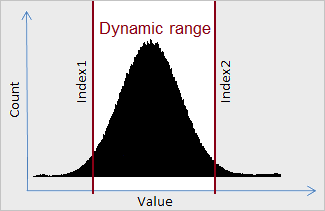

Unit: DeLaFitsGraphics
Type: property
Visibility: public
Member Of: TGraphicColor
property HistogramDynamicRange: THistogramDynamicRange
read FHistogramDynamicRange write SetHistogramDynamicRange;
Description:
The value of dynamic range of the histogram. The dynamic range of the histogram will determine Band. DeLaFits automatically determines the dynamic range, but you can edit it value manually.

When you create an object TFitsGraphic the histogram is not built at once. The histogram is automatically created when the first call a method TFitsGraphic.GraphicRead, or user can create the histogram a manually by a method HistogramUpdate.
See Also:
—
Created with the Personal Edition of HelpNDoc: Full-featured Documentation generator
Copyright © 2013-2016, Evgeniy Dikov
Support: delafits.library@gmail.com
Sources: https://github.com/felleroff/delafits